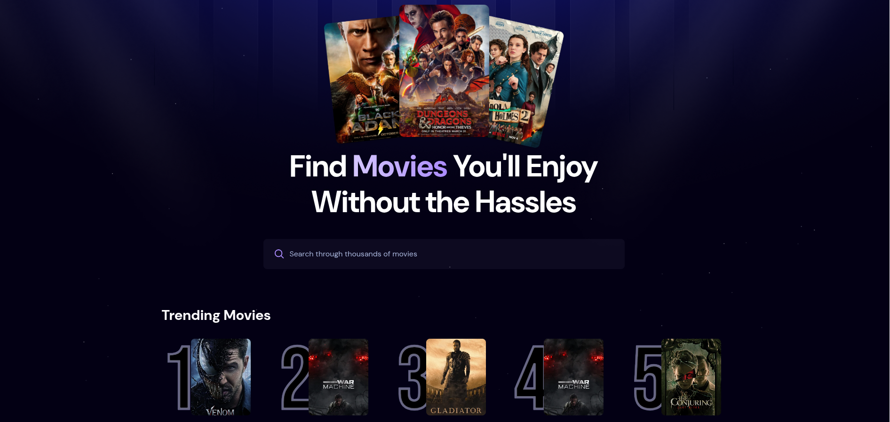

About
Hello my name is Diego, aka xamdp I am fullstack developer, (Junior) :), I aspire to be a self-taught fullstack developer. My goal for this portfolio, is to fill it with many projects I can do until I can no longer can.
I am currently in Japan as a exchange student 留学生, learning 日本語 and fullstack web development side by side.
I did three internships in total when I was in the Philippines, this internship is based from Legazpi, Bicol. All internships are remote. I first landed in backend development teams. Before you can do any actual tasks, I was given 9 tasks that relates to usage of PHP. In the last task, I was asked to create a simple CRUD API functions. At first, I actually don't know what I was doing. But, I persisted and eventually finished the task.
Upon finishing the task, there was a call with my team leader and he reviewed my code and the process how I did it. And, gave me tips on how to better write and understand an idiomatic code.
From there, I got actually involved in teams, understands how design files from UI/UX team passed down to backend teams, got to know the next steps on what to do based on provided data flow diagrams, the creation of API documentation, because without it, it seems very hard on what to do with the API endpoint you will be creating. And, its requirements of that endpoint.
Experience
Nov 2023 - Feb 2024
Backend Intern・Pixel8 Web Solutions and Consultancy Inc.
Write API Documentation and RESTful API based on the API Documentation and Data Flow Diagrams. Write unit tests with PHPUnit / Codecepetion to be tested with tools like Postman and Insomnia. Interacts with local MySQL database using this wrapper.
PHP
Git
GitLab
PHPUnit
Codeception
Insomnia
Composer
Feb 2024 - Jun 2024
Frontend Intern・Pixel8 Web Solutions and Consultancy Inc.
Use Quasar Framework and Vue.js for creating the user interface of both desktop and mobile, design files are provided by the UI/UX team. Implements functionality (read, add, update, and delete) using JavaScript and Axios.
Quasar
Vue.js
JavaScript
GitLab
Cypress
Jun 2024 - Aug 2024
Automation Intern・Pixel8 Web Solutions and Consultancy Inc.
Create, build and run docker containers, also with multiple containers with docker compose. Create Kubernetes cluster using Kind, minikube and with Docker-Desktop. Create GitLab CI/CD pipeline that automates file transfer between two projects repositories that isolates jobs using rsync, bash script, and Git for automated pushing to the other remote repository.
Docker
Kubernetes
GitLab CI/CD
Linux
Bash
View Full Resume
Projects

The Odin Project - Foundations Course - Landing Page
A project based from The Odin Project free resource in the internet. During the foundations course, I am required to create a portfolio based on the provided design file. However, it does not support yet mobile responsiveness.
0
HTML
CSS

The Odin Project - Foundations Course - Etch-a-Sketch
A project where you will be asked to generate a number of boxes per side. Which will then generate that number of sides x number of sides of grid box. The generated boxes, when hovered, will change color dynamically.
0
HTML
CSS
JavaScript

React Project - Movie Gallery
A movie gallery website, where it showcases trending movies based on how much a movie was searched by users. Has a optimized search functionality that debounces the search input by half a second. It uses Appwrite as for backend.
0
ReactJS
tailwindcss
Appwrite
View Full Project Archive →